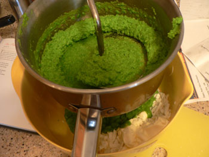
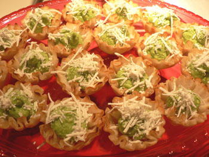

Phyllo cups with puréed peas and ricotta salata
Another dish we made for the party that disappeared in a matter of minutes came from François Payard’s Bite Size, a book of beautiful little hors d’oeuvre taken from his New York catering company. Many of the book’s recipes are quite fussy and too expensive to make for a large group (scallops, truffles, caviar, etc.), but I found one for phyllo cups full of puréed peas and ricotta salata. They looked so pretty in the picture, with the grated ricotta on top making them look like snow-covered Christmas trees.
Making them was a snap, and you hardly need a recipe. Boil two bags of frozen peas for a minute or two to cook them, and immediately purée them in a food processor. Mill or strain them into a half cup of grated ricotta and a few tablespoons of crème fraîche. I think the recipe called for a bit of salt, but add this to taste, as the cheese is salty on its own.

The milling was slightly tedious. I expected the entire purée to run through the holes, but I guess peas have a thick skin. I gave myself a little food mill blister, but that’s becoming a regular fact of life for me.
Mix it all together, and once you have a nice greenish white purée, use a pastry bag to pipe it into phyllo cups (these quantities made more than enough for sixty cups. I mixed what was left with more crème fraîche to make a dip). Sprinkle more grated ricotta on top, and you’re done.

I was surprised at how popular these were, since the taste is pretty delicate. They are exceedingly cute, though, and easy to eat in a single bite. In other words, perfect party food.
Happy new year!
Comments
Did you make the phyllo cups or buy them? And if you made them- how?? All the food you’ve posted so far looks amazing. I’m in awe of inviting so many people into your home at one time!
Happy New Year!
Hi, Sue! We bought the phyllo cups, although the cookbook Leland mentions does give directions for making them.
Leland, in hindsight, don’t you think putting the peas through the food mill was unnecessary and actually counter-productive? The puree would have had a little more body if we hadn’t strained it and we wouldn’t have had to tinker with the recipe by adding the cream cheese. It’s not like we were feeding babies or diverticulitis patients who couldn’t digest pureed pea skins.
And your post doesn’t stress the fact that these were extremely pretty and Christmassy, with the green filling topped with the snow-white sprinkle of fresh cheese.
Thanks, Aunt Sue! Pardon me, Mother, but what about when I say “They looked so pretty in the picture, with the grated ricotta on top making them look like snow-covered Christmas trees”?
I forgot about the cream cheese addition, and you’re definitely right about the pea skins. Next time I’ll leave them in.
Oh, yes, you did say that…never mind!
We just came from a New Year’s brunch where they served phyllo cups filled with chicken salad – good, but obviously not as festive as these!
100 times yum. But I can never get frozen peas not to taste frozen. I guess I could try NOT ageing them in the freezer for 6 months before eating . . .
ps. Thought you all should know – my Mom bought Benj a salad spinner for his birthday. I used to have much opposition and thought we could just wash spinach, etc by hand but after Leland’s extended pro-spinner prosthelytizing I relented and now our lives are changed. Dramatically, and for the better. I’m a total convert.
Hmm…I must have missed the pro-spinner proselytizing, but I remember all the paper towels I used to waste way back when I washed lettuce by hand. I think I’ve had my spinner for 20 years or more now, maybe 30, the same one, and it still works just fine. It’s hard to imagine living without it although in the grand scheme of things I know that statement sounds absurd.
Add a comment